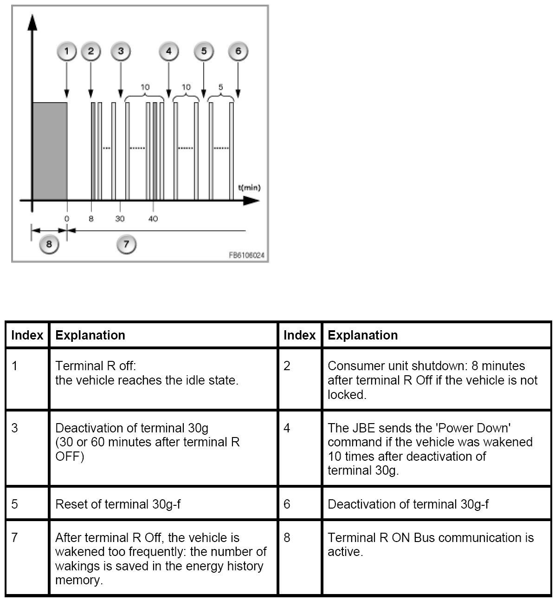

Energy Diagnosis: Vehicle Wake-Up
Energy Diagnosis. Vehicle Wake-Up
The events in the case of too many wakings are described below. In the event of a fault, all the measures serve to ensure the starting capability of the vehicle and for diagnosis if the fault has caused a flat battery.

In the top example, only two authorized wakings are shown:
- Waking FRM (8 minutes after terminal R Off): Load deactivation
- Waking instrument cluster (KOMBI) (40 minutes after terminal R Off): Query of the coolant temperature. Waking does not always occur, only under certain conditions.